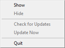
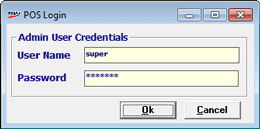
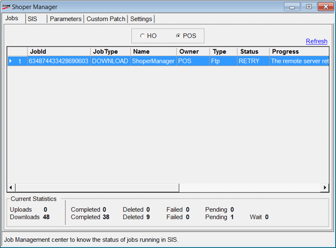
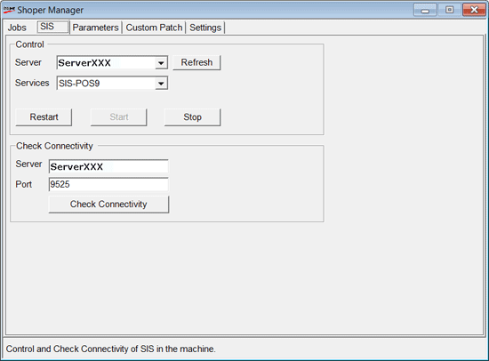
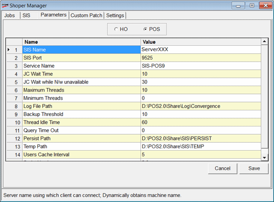
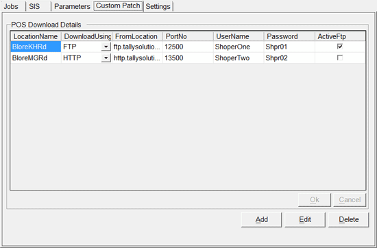
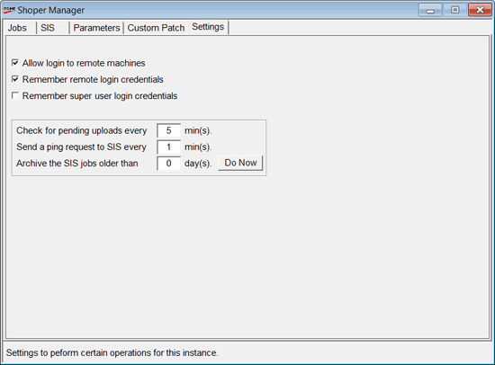

The Shoper Manager helps in checking if the SIS is running or not. You may start, stop or restart the service using this tool, either on your local computer or on any remote computer on which you have access rights. The Shoper Manager is also used to configure the SIS parameters, update Custom Patches, and configure advanced options such as logging in to remote machines.
This tool comes in handy as you need not use Windows system services to manage the Shoper Manager service.
How to reach: Right click the Shoper Manager icon in the System tray.
The following window is displayed.

Click Show.
The POS Login screen is displayed.

Admin User Credentials
User Name: Enter the user name (super).
Password: Enter the password (nothing).
The Shoper Manager window is displayed.
The tabs, Jobs, SIS, Parameters, Custom Patch and Settings are available.
Jobs
All jobs done by the Shoper Manager are stored here.
Note: HO and POS Jobs are visible together when both, Shoper 9 HO and Shoper 9 POS are available in the same system/ computer.
POS: Select POS to view POS jobs.

Refresh:Click to update the current status of Jobs services running on the selected system. The Status and Progress columns reflect the current status.
SIS

Control
Server: Enter the name or IP address of the computer on which Shoper Manager is installed. Alternatively, you may select one from the list, if it is your local computer or a remote computer you have accessed earlier.
Refresh: Click to update the current status of SIS services running on the selected system. The Restart, Start and Stop buttons reflect the current status. Click Refresh to get the current status of the services running on the system.
If you have selected a remote system, you may see the Remote Login Credentials window to accept the Windows login details to access the remote server.
Services: Select the service name. All SIS services installed on the selected computer are listed. SIS-POS9 is selected in the screenshot above.
Check Connectivity
Server: Enter the computer name or IP address of the remote server to which you want to check the connectivity.
Port: Enter the port on which the service is accessible on the remote server.
Note: The Default port number is 9525 for POS. This port number is configured automatically during installation. If the port is being used by any other application during SIS installation, the installer requests you to enter an available port number.
Check Connectivity: Click to check the connectivity to the specified server through the selected port.
Parameters
Click the Parameters tab. The following screen is displayed.
Note: HO and POS Jobs are visible together when both, Shoper 9 HO and Shoper 9 POS are available in the same system/ computer.
POS: Select POS.

SIS Name: The Server name using which client can connect is displayed. It dynamically obtains the machine name.
SIS Port: The Port Number in which the server will be running is displayed. The default port number for POS is 9525.
Service Name: The Service Name of the Server in the machine is displayed.
JC Wait Time: The Job Controller thread sleep time after processing the job store is displayed. It is specified in seconds.
JC Wait while N/w unavailable: The Job Controller thread sleep time when the network is not available is displayed. It is specified in seconds.
Maximum Threads: The maximum threads that can be created for job processing is displayed. The number per processor is specified.
Minimum Threads: The minimum threads which are always present for job processing are displayed. The number per processor is specified
Log File Path: The path where the log file Log.log is created is displayed. It dynamically obtains the shoper share folder.
Backup Threshold: The maximum file size after which the log file will be truncated is displayed. It is specified in megabytes (MB).
Thread Idle Time: The idle time to wait for the job thread before getting destroyed is displayed. It is specified in seconds.
Query Time Out: The waiting time for the query response from the SQL server before closing it is displayed. It is specified in seconds.
Persist Path: The path where persisting files are created is displayed. It dynamically obtains the Shoper share folder.
Temp Path: The path where the temp files are created is displayed. It dynamically obtains the Shoper share folder.
Users Cache Interval: The time interval by which the Shoper Manager will ping (heart beat) the SIS is displayed. It is specified in minutes.
Script Version: The version of the script is displayed.
Custom Patch
Click Custom Patch to view the following screen. Use this tab to download customised updates from HO to POS.

POS Download Details
Configure the Location Name, Download Using, From Location, Port No, User Name, Password and Active Ftp.
Settings
Click Settings to view the following screen.

Allow login to remote machines: Select to enable logging in to remote machines.
Remember remote login credentials: Select to remember the credentials of remote logins.
Remember super user login credentials: Select to remember the credentials of super user logins.
Set the time interval in minutes to check for pending uploads.
Set the time interval in minutes to send a ping request to SIS.
Set the time interval in days to archive the SIS jobs. Click Do Now to implement the settings immediately.